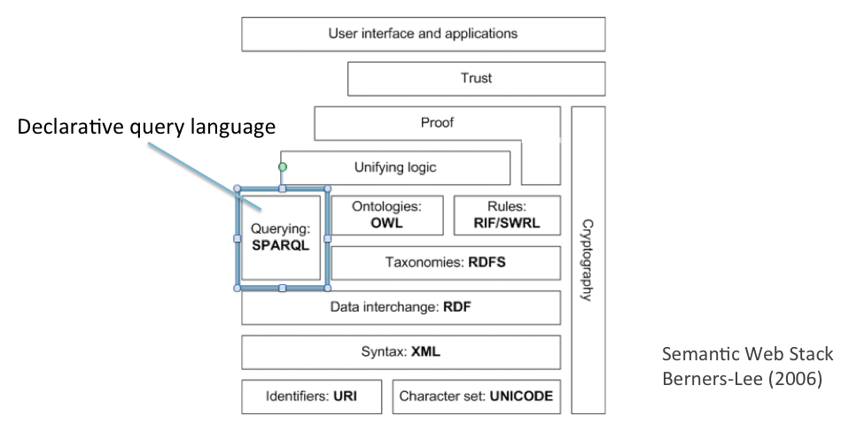

Reasoning enhances the information contained in a dataset by including results obtained by inference from the triples already present. As a simple example, suppose that the dataset includes the following triples, shown here in Turtle (assume the usual prefixes):
dbpedia:The_Beatles a mo:MusicGroup . mo:MusicGroup rdfs:subClassOf mo:MusicArtist .
Recall that the predicate a in the first triple is Turtle shorthand for rdf:type, denoting class membership. Now, suppose that we submit the following SELECT query designed to retrieve all triples in which the Beatles occur as subject:
PREFIX dbpedia: <http://dbpedia.org/resource/>
SELECT *
WHERE { dbpedia:The_Beatles ?predicate ?object }
Assuming there are no other relevant triples, the response to this query under a regime with no entailment will be the following single-row table:
| ?predicate | ?object |
| a | mo:MusicGroup |
An obvious inference has been missed here, since if every music group is a music artist (as asserted by the second triple), the Beatles will also be a music artist. (It might sound odd to call a group an artist, but this is how the information is encoded in the Music Ontology.) If we execute the query on an engine that implements the RDFS entailment regime (a set of rules governing inference based on RDFS resources like rdfs:subClassOf), the output table will be enriched by a second variable binding inferred with the aid of the second triple.
| ?predicate | ?object |
| a | mo:MusicGroup |
| a | mo:MusicArtist |
This is a very simple case, but in general the formulation of workable entailment regimes is a complex task, still under investigation and discussion. One hard problem is what to do if the dataset is inconsistent, since a well-known result of logic states that from a contradiction, anything can be inferred. (This follows from the definition of material implication, for which the truth-conditions state that if the antecedent is false, the implication holds whatever the consequent. Hence a contradiction, being false by definition, implies any statement whatever.)
Another problem is that some queries might return an infinite set of solutions. For instance, there is a convention in RDF that allows for a family of predicates rdf:_1, rdf:_2, etc. ending in any positive integer; such predicates are used when constructing lists. This means that if all possible inferences are performed, a query of the form ?x rdf:type rdf:Property (intuitively, return all properties) would yield an infinite set.
For practical purposes we can ignore such cases, but they illustrate that that query engines may not always return all the entailments that one might expect.
In the rest of this section we look first at typical entailments that arise from RDFS, and then at the much richer entailments that can result from an ontology in OWL.
RDF Schema introduces a very limited range of logical terms based mostly on the concept of class, or rdfs:Class, a concept absent from RDF. It is possible to state directly that a resource denotes a class, using a triple such as the following (to save space we omit prefixes):
mo:MusicGroup rdf:type rdfs:Class .
We have already seen an example of the predicate rdfs:subClassOf, through which we can assert that the resource in subject position is a subclass of the resource in object position – a relationship often expressed in English by sentences of the form All X are Y (e.g., "All pianists are musicians"). A similar predicate is provided for properties rather than classes, illustrated by the following triple in which subject, predicate and object are all property resources:
ex:hasSinger rdfs:subPropertyOf ex:hasPerformer .
This means that if a subject and object are related by the ex:hasSinger predicate, they must also be related by the ex:hasPerformer predicate. Note that even though these are properties, they may occur in subject and object position – in other words, we can make statements about properties, as well as using them to express relationships among other resources. Two important facts about any property are its domain and range, which constrain the resources that can be employed in subject and object position when the property is used as a predicate; these can also be defined using RDFS resources, as follows:
ex:hasSinger rdfs:domain mo:Performance . ex:hasSinger rdfs:range foaf:Agent .
This means that any resource occurring as subject of ex:hasSinger must belong to the class mo:Performance (only performances have singers), while any resource occurring as object of ex:hasSinger must belong to the class foaf:Agent (only agents are singers).
The RDFS entailment regime is defined by thirteen rules, which are listed here. In brief, their import is as follows:
In what follows, we look more closely at how these RDFS resources and their associated rules can support inferences when information is retrieved from a dataset.
We have already seen an example of an inference based on rdfs:subClassOf, which we repeat below omitting Prefix statements:
dbpedia:The_Beatles a mo:MusicGroup . mo:MusicGroup rdfs:subClassOf mo:MusicArtist .
The general form of this inference is that if a resource belongs to a class, which in turn belongs to a broader class, then the resource must also belong to this broader class (see rdfs9). This pattern will be familiar as a variant of the Aristotelian syllogism:
Socrates is a man.
All men are mortal.
Therefore, Socrates is mortal.
A similar inference can be drawn from two subclass statements in which the object of one statement is the subject of the other (see rdfs11):
mo:MusicGroup rdfs:subClassOf mo:MusicArtist . mo:MusicArtist rdfs:subClassOf foaf:Agent .
If music groups are a subclass of music artists, who are in turn a subclass of agents, then music groups must be a subclass of agents. This corresponds to the so-called Barbara pattern of the syllogism:
All Greeks are men.
All men are mortal.
Therefore, all Greeks are mortal.
Suppose a dataset contains the following triple asserting that Paul McCartney belongs to the Beatles:
dbpedia:The_Beatles mo:bandMember dbpedia:Paul_McCartney .
Can we infer anything further about the resources in subject and object position? To a human, of course, it will be obvious from the resource names that the Beatles is a group, and that Paul McCartney is an agent, or more specifically a person. However, these names are meaningless to the query engine, which can only utilise information encoded in RDF triples. To put ourselves in this position, we could try using arbitrary IRIs, as in this version of the triple:
ex:X mo:bandMember ex:Y .
Even with subject and object anonymised in this way, a person could infer from the predicate that X will be a band, and Y a person. The query engine can perform this inference too if the dataset includes triples defining the domain and range of the property (see rdfs2 and rdfs3):
mo:bandMember rdfs:domain mo:MusicGroup ;
rdfs:range foaf:Agent .
(Remember the use of the semi-colon here to abbreviate two statements with the same subject.) If these triples are present in the dataset, and the query engine is deploying the RDFS entailment regime, then two further triples can be directly inferred:
ex:X a mo:MusicGroup . ex:Y a foaf:Agent .
A special case of this inference arises when a triple uses an RDFS predicate for which domain and range statements are axiomatic, meaning that they are defined in RDFS itself and need not be included in the dataset over which the query is run. Thus for rdfs:subClassOf, the following triples are axiomatic and need not be defined by developers:
rdfs:subClassOf rdfs:domain rdfs:Class . rdfs:subClassOf rdfs:range rdfs:Class .
It follows that on encountering any subclass statement, the query engine can infer that its subject and object must be classes. Thus from –
mo:MusicGroup rdfs:subClassOf mo:MusicArtist .
– it can infer:
mo:MusicGroup a rdfs:Class . mo:MusicArtist a rdfs:Class .
Finally, whenever SP has been defined as a sub-property of P, it can be inferred that any subject and object having an SP relationship must also have the (broader) P relationship (see rdfs5):
ex:hasSinger rdfs:subPropertyOf ex:hasPerformer . ex:Yesterday ex:hasSinger dbpedia:PaulMcCartney .
From these two statements, the query engine may infer:
ex:Yesterday ex:hasPerformer dbpedia:PaulMcCartney .
Such inferences are common when a dataset uses RDFS to organise classes and properties into hierarchies. Thus classes like Corgi, Dog, Canine, Mammal, Animal, Living thing, comprise an obvious hierarchy in which membership of any class implies membership of all its superclasses; as we have just shown, a similar hierarchical organisation can be defined for properties.
Compared with OWL, RDFS has two main limitations: (a) it provides no operators for constructing complex classes or properties out of simpler ones (e.g., "artist that belongs to at least two bands" from artist, band, and member-of); (b) it lacks some important resources for describing the logical properties of classes and properties, such as disjointness (for classes) and inverse (for properties). Limitations of the second kind are particularly common when working with linked data, and it is worth illustrating some of them now, before we look in detail at OWL.
Suppose that a dataset contains resources named ex:Man and Woman, both classes, which can be used for classifying resources that represent individual people:
dbpedia:Paul_McCartney a ex:Man . dbpedia:Cilla_Black a ex:Woman .
Now, suppose that in addition to these two triples, a third triple is either present in the dataset, or can be inferred:
dbpedia:Paul_McCartney a ex:Woman .
Plainly something has gone wrong here, and we would like a query engine capable of even elementary reasoning to signal an inconsistency. It might surprise you the learn that there is no way of doing this, because RDFS provides no predicate allowing you to state that men and women are disjoint (i.e., that no man is a woman, or nothing is both a man and a woman). The necessary predicate, owl:disjointWith, is found in OWL only, and allows statements such as the following:
ex:Man owl:disjointWith ex:Woman .
To give one more example, suppose that we introduce a property resource allowing us to state that one person is married to another. We might for instance apply it to the McCartneys:
dbpedia:Paul_McCartney ex:marriedTo dbpedia:Linda_McCartney .
Now, suppose that someone formulates the following query, corresponding to the question "Who is married to Paul McCartney?" (we omit PREFIX clauses as before):
SELECT ?person
WHERE { ?person ex:marriedTo dbpedia:Paul_McCartney }
Obviously the answer should be "Linda McCartney", but this binding will not be found because the following triple is missing from the dataset:
dbpedia:Linda_McCartney ex:marriedTo dbpedia:Paul_McCartney .
To infer this we need a statement to the effect that if X is married to Y, Y must be married to X. In mathematics, this fact is expressed by saying that the property ex:marriedTo is symmetric. This can be stated directly using OWL, as follows:
ex:marriedTo a owl:SymmetricProperty .
No such resource exists in RDFS, so this kind of inference cannot be performed under an RDFS entailment regime.
As a reminder, Figure 10 shows the location of the Web Ontology Language (OWL) in the Semantic Web stack. As can be seen, OWL depends on RDF and RDFS, from which it draws crucial resources such as rdf:type and rdfs:Class. Like RDFS, it can enhance the information in RDF datasets, accessible to SPARQL queries.

Figure 10: OWL in Semantic Web stack
The current OWL standard OWL-2 is complex, providing for a number of fragments with different computational properties (see chapter 1). Most of these are subsets of OWL2-DL, the OWL description logic, but there is also a more expressive variant called OWL2-Full which ventures outside description logic. We will not try to cover all this material in this section. Instead, we look at some of the main logical resources in OWL2-DL from the viewpoint of their role in inference.
We have illustrated in the last section an inference based on one of the property characteristics that can be represented in OWL, namely symmetry (if X p Y, then Y p X). A number of others are provided, of which the following are used most often:
Let us see how these characteristics are used in practice, starting with a transtive property.
ex:locatedIn a owl:TransitiveProperty . ex:AbbeyRoadStudios ex:locatedIn ex:London . ex:London ex:locatedIn ex:UnitedKingdom .
Here the classification of ex:locatedIn as a transitive property allows a query engine with an OWL2-DL regime to draw the following inference in response to a query concerning the location of the Abbey Road Studio (or concerning what is located in the United Kingdom):
ex:AbbeyRoadStudios ex:locatedIn ex:UnitedKingdom .
Moving on to functional properties, consider this set of triples:
ex:hasFather a owl:FunctionalProperty . dbpedia:Julian_Lennon ex:hasFather dbpedia:John_Lennon . dbpedia:Julian_Lennon ex:hasFather ex:J_Lennon .
The classification of ex:hasFather as functional permits the inference that Julian Lennon can have only one father, and hence that the objects of the second and third triples must be co-referential. In OWL this is expressed using owl:sameAs:
dbpedia:John_Lennon owl:sameAs ex:J_Lennon .
Exactly the same inference can be drawn if the same information is presented using the inverse-functional property ex:isFatherOf:
ex:isFatherOf a owl:InverseFunctionalProperty . dbpedia:John_Lennon ex:isFatherOf dbpedia:Julian_Lennon . ex:J_Lennon ex:isFatherOf dbpedia:Julian_Lennon .
Note that owl:sameAs is symmetric, and also transitive; these characteristics are axiomatic in OWL, so they need not be specified by the ontology developer.
Finally, if we include a triple stating that ex:hasFather and ex:isFatherOf are inverse, we obtain two ways of expressing fatherhood, with subject and object switched. Imagine for instance a dataset with just two triples –
ex:hasFather owl:inverseOf ex:isFatherOf . dbpedia:Julian_Lennon ex:hasFather dbpedia:John_Lennon .
– and suppose we run the following query (prefixes omitted) on who is the father of Julian Lennon:
SELECT ?person
WHERE { ?person ex:isFatherOf dbpedia:Julian_Lennon }
Without OWL-based reasoning the query engine has no way of returning John Lennon as an answer to this query, but using the inverse property statement it can derive the following entailment:
dbpedia:John_Lennon ex:isFatherOf dbpedia:Julian_Lennon .
We have already seen an OWL property owl:sameAs which allows us to state that two IRIs name the same individual:
dbpedia:John_Lennon owl:sameAs ex:J_Lennon .
This property is very important in linked data, since it provides a means by which datasets with different naming conventions can be connected. OWL also provides predicates for stating that two classes, or two properties, have the same meaning, as follows:
mo:MusicArtist owl:equivalentClass ex:musician . foaf:made owl:equivalentProperty ex:creatorOf .
In essence we have three ways here of stating that two terms mean the same thing, and in each case inferences can be drawn from the fact that equivalence of meaning is symmetric and transitive. The practical consequence is that if a dataset already contains two names for John Lennon (say), owing to the owl:sameAs statement above, we can add a third name by relating it to only one of these names –
dbpedia:John_Lennon owl:sameAs new:JL666 .
– whereupon by symmetry and transitivity, a similar statement can be inferred for any subect-object pair drawn from these three names:
ex:J_Lennon owl:sameAs new:JL666 . new:JL666 owl:sameAs ex:J_Lennon . new:JL666 owl:sameAs dbpedia:John_Lennon .
Similarly, a single owl:sameAs statement introducing a fourth name will suffice to make it equivalent in meaning to any of the other three – and so on.